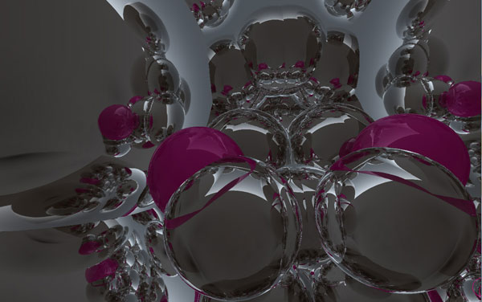
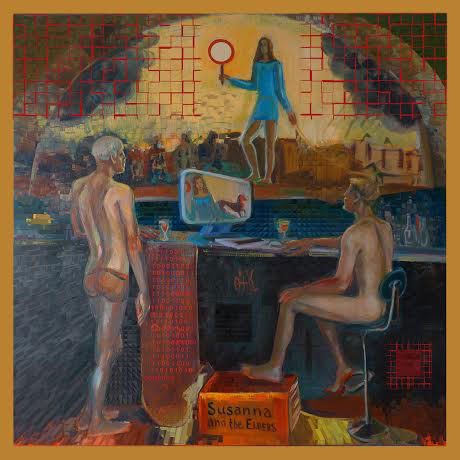
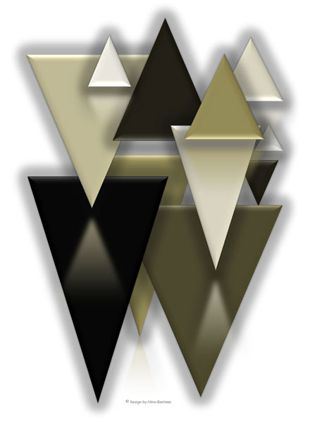
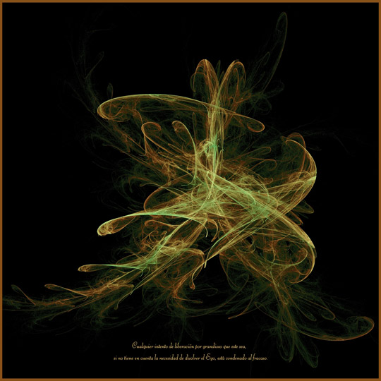
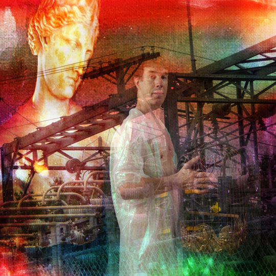
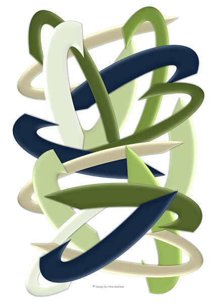
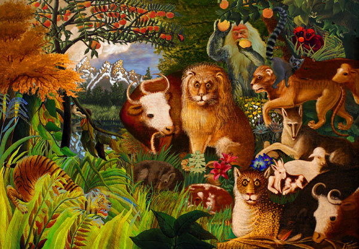
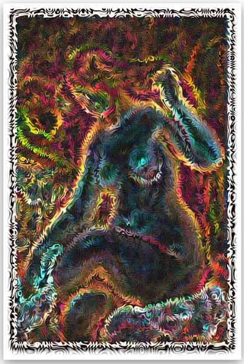
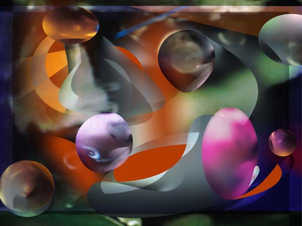
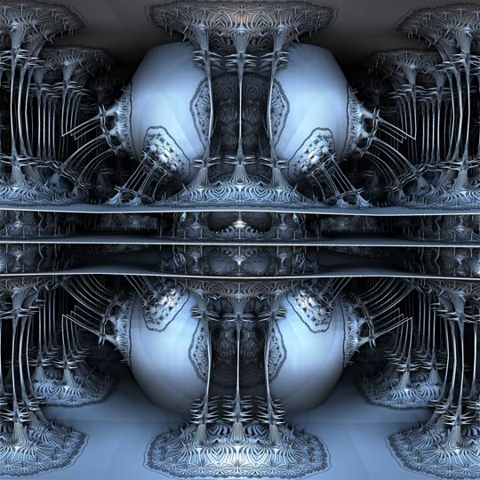

Click image to visit MOCA gallery where image resides
Bubblecapture 
by Bryant Davis
11/11/2021
Susanna and the Elders 
by Olga Kvassova
11/12/2021
Schattenspiel 
by Nina Koelman
11/13/2021
Liberation 
by Francisco Sarries
11/14/2021
The Power of the Classics 
by Ann Tracy
11/15/2021
The Verwirrung 
by Nina Koelman
11/16/2021
Return of the Golden Ape 
by Randy Morris
11/17/2021
Electric Renoir 
by Bruce Thacker
11/18/2021
Bird Soup 
by Aurelia Zack
11/19/2021
Faberge Factory 
by Paul Griffitts
11/20/2021